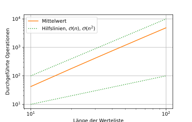
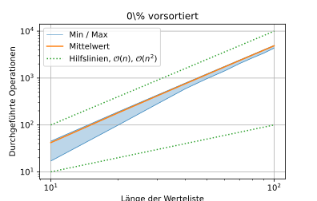

x = np.linspace(1,100,500)
f = x**4 - 60*x**2 + 1000
g = x**4
plt.plot(x,f, label="$f_1(n)$")
plt.plot(x,g, label='$g_1(n)$')
plt.xlabel('n')
plt.legend()
plt.xscale('log')
plt.yscale('log')
plt.grid()
plt.savefig('00-bilder/komplexitaet.svg')
plt.close()32 Eigenschaften
32.1 Terminiertheit
Terminiertheit bedeutet, dass ein Algorithmus nach endlich vielen Schritten anhält, oder er bricht kontrolliert ab. Einfache Beispiele:
- Addition zweier Dezimalzahlen
- Summe der ersten N natürlichen Zahlen
Allerdings kann die Terminiertheit nicht für alle Algerithmen gezeigt werden. Das Halteproblem besagt, dass es gibt keinen Verfahren gibt, welches immer zutreffend sagen kann, ob der Algorithmus für die Eingabe terminiert. Hierzu kann das Collatz-Problem als Beispiel herangezogen werden.
Die Zahlenfolge wird wie folgt konstruiert:
- beginne mit irgendeiner natürlichen Zahl \(\mathsf n_0 > 0\)
- ist \(\mathsf n_i\) gerade so ist \(\mathsf n_{i+1} = n_i/2\)
- ist \(\mathsf n_i\) ungerade so ist \(\mathsf n_{i+1} = 3n_i + 1\)
- endet bei \(\mathsf n_i = 1\)
Collatz-Vermutung: Jede so konstruierte Zahlenfolge mündet in den Zyklus 4, 2, 1, egal, mit welcher natürlichen Zahl man beginnt. Bisher unbewiesen.
32.2 Determiniertheit
Ein deterministischer Algorithmus ist ein Algorithmus, bei dem nur definierte und reproduzierbare Zustände auftreten. Die Ergebnisse des Algorithmus sind somit immer reproduzierbar. Beispiele hierfür:
- Addition ganzer Zahlen
- Selectionsort
- Collatz-Sequenz
32.3 Effizienz
Die Effizienz eines Algorithmus ist nicht strikt definiert und kann folgende Aspekte umfassen:
- Laufzeit
- Speicheraufwand
- Energieverbrauch
Bei bestimmten Anwendungen sind entsprechende Eigenschaften notwendig:
- Speicheraufwand bei Big Data, also riesige Datenmengen, z.B. in der Bioinformatik
- Laufzeit bei Echtzeitanwendung, z.B. Flugzeugsteuerung, Fußgängerdynamik
32.4 Komplexität
Bei der Analyse von Algorithmen, gilt es die Komplexiät zu bestimmen, welche ein Maß für den Aufwand darstellt. Dabei wird nach einer Aufwandfunktion \(\mathsf f(n)\) gesucht, welche von der Problemgröße \(\mathsf n\) abhängt. Beispiel für eine Problemgröße:
- Anzahl der Summanden bei einer Summe
- Anzahl der zu sortierenden Zahlen
Meist wird dabei die Bestimmung auf eine asymptotische Analyse, d.h. eine einfache Vergleichsfunktion \(\mathsf g(n)\) mit \(\mathsf n \rightarrow \infty\), reduziert. Dabei beschränkt \(\mathsf g(n)\) das Wachstum von \(\mathsf f(n)\).
Die Funktion \(\mathsf g(n)\) wird oft durch ein \(\mathsf \mathcal{O}\) gekennzeichnet und gibt so eine möglichst einfache Vergleichsfunktion an. Beispiele:
- \(\mathsf f_1(n) = n^4 + 5n^2 - 10 \approx \mathcal{O}(n^4) = g_1(n)\)
- \(\mathsf f_2(n) = 2^{n+1} \approx \mathcal{O}(2^n) = g_2(n)\)

Um sich ein besseres Bild zu den Auswirkungen hoher Kompexitäten zu machen, sei folgendes Beispiel gegeben.
- ein Berechnungsschritt (unabhängig von der Problemgröße \(\mathsf n\)) sei z.B. 1 s lang
- das \(\mathsf n\) sei beispielsweise 1000
Damit ergeben sich folgende (asymptotische) Abschätzungen der Laufzeit:
- \(\mathsf \mathcal{O}(n)\): 103 s ≈ 1 h
- \(\mathsf \mathcal{O}(n^2)\): 106 s ≈ 11 d
- \(\mathsf \mathcal{O}(n^3)\): 109 s ≈ 31 a
- \(\mathsf \mathcal{O}(2^n)\): 21000 s ≈ …
32.4.1 Komplexität Selectionsort
Die Kompexität dieses Verfahrens kann leicht abgeschätzt werden. Bei jedem Durchlauf wir das Minimum / Maximum gesucht, was anfangs \(\mathsf n\) Operationen benötigt. Beim nächsten Durchlauf sind es nur noch \(\mathsf n − 1\) Operationen und so weiter. In der Summe sind es also
\[ \mathsf f(n) = \sum_{i=0}^n i = \frac{n(n-1)}{2} \approx \mathcal{O}(n^2) \]
Damit hat der Selectionsort eine Komplexität von \(\mathsf \mathcal{O}(n^2)\). Die folgende Abbildung verdeutlicht dies nochmals.
def sort_sel(A):
cnt = 0
n = len(A)
for i in range(n):
mv = A[i]
mi = i
for j in range(i, n):
cnt += 1
if A[j] < mv:
mv = A[j]
mi = j
# cnt += 1
A[mi] = A[i]
A[i] = mv
# cnt += 1
return cnt
def sort_bubble(A):
cnt = 0
n = len(A)
for i in range(n):
swapped = False
for j in range(0, n-i-1):
# print(j, 0, n-i)
cnt += 1
if A[j+1] < A[j]:
mv = A[j]
A[j] = A[j+1]
A[j+1] = mv
# cnt += 3
swapped = True
if swapped == False:
# print('no swap', i)
return cnt
return cntdef analyse_sorting(sort_fnk, non_rand_p = 0.0, reps = 100):
n_max = 100001
rand_A = np.random.randint(0, high=n_max // 2, size=10*n_max)
def time_sorting(n):
i = np.random.randint(0, n_max, size=1)[0]
A = np.copy(rand_A[i:i+n])
non_rand_i = np.linspace(0, n-1, int(n*non_rand_p), dtype=np.int32)
# print(n, len(non_rand_i))
A[non_rand_i] = np.linspace(0, n_max//2, len(non_rand_i), dtype=np.int32)
# print(A)
return sort_fnk(A)
res_min = []
res_avg = []
res_max = []
ns = []
# for n in range(1, 10, 1):
# print(n)
# res = []
# for r in range(reps):
# res.append(time_sorting(n))
# ns.append(n)
# res_min.append(np.min(res))
# res_max.append(np.max(res))
# res_avg.append(np.average(res))
for n in range(10, 101, 10):
# print(n)
res = []
for r in range(reps):
res.append(time_sorting(n))
ns.append(n)
res_min.append(np.min(res))
res_max.append(np.max(res))
res_avg.append(np.average(res))
print(n, np.average(res))
# for n in range(100, 1101, 100):
# print(n)
# res = []
# for r in range(reps):
# res.append(time_sorting(n))
# ns.append(n)
# res_min.append(np.min(res))
# res_max.append(np.max(res))
# res_avg.append(np.average(res))
return np.array(ns), np.array(res_min), np.array(res_avg), np.array(res_max)def plot_sorting(res, label, avg_only = False, title=None):
ns, y1, y2, y3 = res
if not avg_only:
plt.plot(ns, y1, color='C0', lw=0.5)
plt.plot(ns, y3, color='C0', lw=0.5, label='Min / Max')
plt.fill_between(ns, y1, y3, alpha=0.3, color='C0')
plt.plot(ns, y2, color='C1', label='Mittelwert')
yi1 = 1e0 * ns
yi2 = 1e0 * ns**2
plt.plot(ns, yi1, ls=':', color='C2', label='Hilfslinien, $\mathcal{O}(n)$, $\mathcal{O}(n^2)$')
plt.plot(ns, yi2, ls=':', color='C2')
plt.xscale('log')
plt.yscale('log')
plt.xlabel('Länge der Werteliste')
plt.ylabel('Durchgeführte Operationen')
plt.grid()
plt.legend()
if title:
plt.title(title)
plt.savefig('00-bilder/{}.svg'.format(label))
plt.close()res1 = analyse_sorting(sort_bubble, non_rand_p = 0.0, reps = 1000)10 42.146
20 181.655
30 419.084
40 756.835
50 1193.535
60 1727.061
70 2368.03
80 3106.593
90 3943.65
100 4883.456plot_sorting(res1, 'sort_selection', avg_only = True)
32.4.2 Komplexität Bubblesort
Die Komplexität des Bubblesort muss unterschieden werden in den günstigsten Fall (best case), den ungünstigsten Fall (worst case) und einem durchschnittlichen Fall (average case):
- best case: \(\mathsf \mathcal{O} (n)\)
- worst case: \(\mathsf \mathcal{O} (n^2)\)
- average case: \(\mathsf \mathcal{O} (n^2)\)
Der best case ergibt sich zum Beispiel, falls die Eingabeliste bereits sortiert ist, da der Algorithmus nur einmal durch die Liste gehen muss, entsprechend n-Mal. Folgende Abbildung verdeutlicht die Anzahl der durchgeführten Operationen im Falle einer vollständig zufälligen Liste und einer, bei welcher 95% der Werte bereits sortiert ist. Dabei wurden für jedes \(\mathsf n\) jeweils 10000 Listen sortiert. Es ist der Mittelwert und die minimalen und maximalen Operationen dargestellt.
res2 = analyse_sorting(sort_bubble, non_rand_p = 0.0, reps = 10000)10 41.9902
20 181.1026
30 419.059
40 757.3518
50 1194.1962
60 1731.793
70 2368.5196
80 3105.4371
90 3941.4753
100 4877.4439plot_sorting(res2, 'sort_bubble_p000', title='0\% vorsortiert')
res3 = analyse_sorting(sort_bubble, non_rand_p = 0.95, reps = 10000)10 30.0619
20 126.6126
30 306.5029
40 545.3781
50 907.0299
60 1305.1662
70 1860.7473
80 2440.4905
90 3193.3467
100 3971.6761plot_sorting(res3, 'sort_bubble_p095', title='95\% vorsortiert')